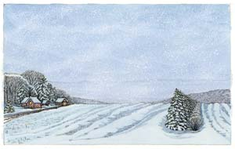

Winters in the northern parts of the country vary from year to year, but drifting and blowing snow often causes hazardous driving conditions. To help reduce snow drifts, structural snow fences made from wood, metal or plastic are used along highways as windbreaks.
Living snow fences, on the other hand, are plants such as trees, shrubs and native grasses, planted 100 to 200 feet away from the roadway. These fences form a barrier so the wind drops the snow on the leeward side of the barrier, thus protecting the road or property downwind. Two rows of plantings, a row of evergreens on the leeward side of the break and a row of shrubs on the windward side, spaced about 20 feet apart, provide the best wind break.
Living fences offer many advantages - wildlife habitat, rural aesthetics and improved winter driving conditions. These plantings also reduce soil erosion by wind, and there’s an added bonus: Snow drifts in crop fields help replenish moisture in the soil for the next growing season. In addition, less plowing and salting are needed to maintain roads if the drifting snow is kept off the highways.
|
 KRISTIN HURLIN Hedgerows and living snow fences can protect your driveway from blowing snow and drifting. |
|
|